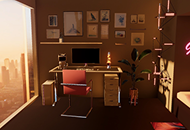
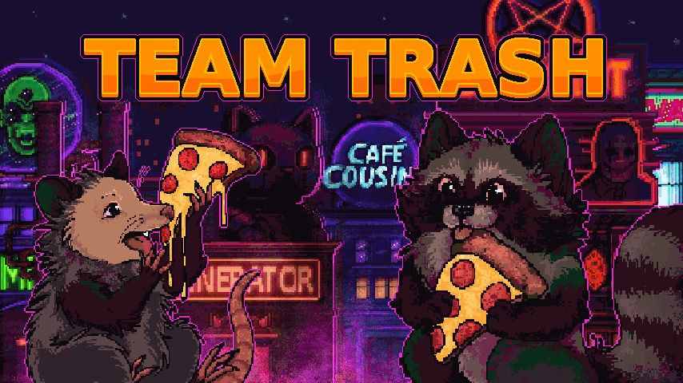

Complicity (Bachelor Thesis)
A Game-Based Study of How Role Perspective Shapes Awareness and Understanding of Exploitative Design Practices
I’m a media informatics B.Sc. with a background in programming, web development, and UI/UX.
I enjoy
building digital applications and interfaces that combine programming with thoughtful UI and UX design.

A Game-Based Study of How Role Perspective Shapes Awareness and Understanding of Exploitative Design Practices

2D Unity jump & run where players switch between raccoon and possum to survive and scavenge.